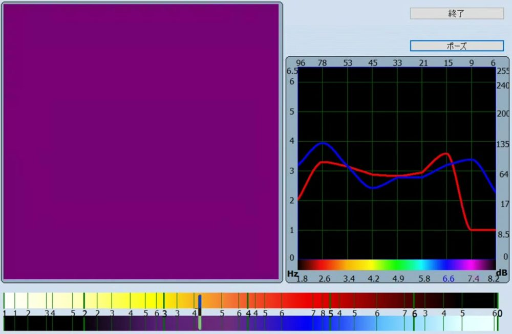
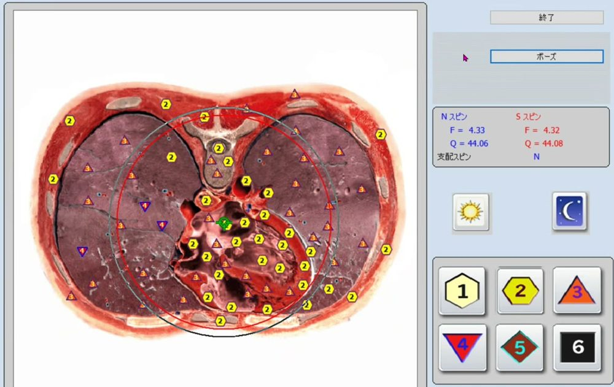

このような状況はありませんか
AutoMetaが引き受けるのは、その「操作」と「待ち時間」です。
AutoMetaの使い方
お名前、実行する内容、日時を登録します。毎日・曜日ごとなどの繰り返しも選択できます。
予定の時刻になると、調査とセラピーの操作を順に実行します。
完了した予定と確認が必要な予定を、「確認待ち」の画面で確認します。
| 順 | 顧客 | 実行内容 | 繰り返し | 次に実行される |
|---|---|---|---|---|
| 1 | 山田 花子 | 調査＋セラピー2回 | 毎日 01:00 以降 | 今日 01:00 以降 |
| 2 | 佐藤 太郎 | 調査＋セラピー2回 | 毎日 01:00 以降 | 今日 01:00 以降 |
画面イメージです。表示されているお名前は見本です。
開発時の実測値であり、設定や項目数によって変動します。
普段は手作業で行っている調査とセラピーを、自動で進めます。


開発時に記録したNLS機器のソフトの画面です。AutoMetaの説明のために掲載しており、診断や効果を示すものではありません。
無人で運転するための仕組み
実行の前に、画面に表示されたお名前と予定のお名前が一致するかを確認します。一致しない場合は実行しません。
設定しておくと、実行後に履歴の件数が増えたかを確認します。増えていなければ「完了」として扱いません。
途中で停止した予定や確認が必要な予定は、「確認待ち」の画面に残ります。
プランと料金（税込）
対価を得てお客様に提供する場合は、人数にかかわらずプロプランをお選びください。
| スタンダードプラン | プロプラン | |
|---|---|---|
| 利用目的 | ご本人・ご家族のため | お客様への提供（商用利用） |
| 初期費用 最初のセットアップを含む | 49,800円 | 49,800円 |
| 月額 | なし（買い切り） | 月4,980円 年払いは49,800円 |
| 登録できる人数 | パソコン1台につき5人まで 無効にした予定の方も人数に含みます | 上限なし |
| お客様へのお知らせ | なし | 完了をLINE・メールで自動送信 |
| ご自身への通知 | 画面の表示のみ | 画面の表示 ＋ LINE・メール |
| サポート | チャット（LINE） | チャットを優先して対応 電話・Zoomは月2回（各30分まで） |
| 2台目以降のパソコンへのセットアップ | 1台につき33,200円 | 1台につき33,200円 ＋ 月2,490円 |
スタンダードプランの方は、必要に応じて電話・Zoomでの相談を追加できます。スポットサポート5,500円／30分、またはサポートプラン 6か月 5,880円（前払い・自動更新）。
スタンダードプランで始めてプロプランへ変更する場合、初期費用の追加はありません。プロプランの解約後は、スタンダードプランとしてお使いいただけます。
モニター募集
ご本人・ご家族のために使う方
お客様に提供している方
先着順です。定員になり次第、募集を終了します。
プロプランの月額は、モニター募集の終了後、9,800円への変更を想定しています。時期と金額は未定です。モニターの方の月額は、ご契約の継続中は4,980円です。
ご利用までの流れ
LINEかメールで、お使いの機器と目的をお知らせください。
対応の可否をご回答します。
規約をご確認いただき、お手続きをご案内します。
担当がリモートでセットアップし、動作を確認します（約1時間）。
セットアップの完了後にお支払いいただきます。ご入金の確認後、利用者コードの控えと配布物をお渡しし、ご利用開始となります。
できること・お約束できないこと
AutoMetaはNLS機器のソフトの画面を操作して動作します。そのため、ソフトの画面が変わると動作しなくなる場合があります。
| 発生した事象 | 対応 | |
|---|---|---|
| NLS機器のソフトのバージョンアップ等により画面が変更になり、動作しなくなった場合 | 対応版を作成した場合は、無償でお渡しします。ただし、対応版の提供を保証するものではありません。 | |
| AutoMetaの不具合 | 無償で修正します。 | |
| お使いの環境に固有の問題 | まずチャットでご相談ください。通話や画面共有が必要な場合は、プランに応じてご案内します。 | |
最初のセットアップは初期費用に含まれており、担当がリモートで行います。日々の操作は、予定の登録と運転の開始が中心です。
はい。運転中は、パソコンとNLS機器のソフトを起動しておく必要があります。ノートパソコンは、閉じると基本的に停止するため、運転中は閉じないでください。
実行の前に、画面のお名前と予定のお名前を照合し、一致しない場合は実行しません。
「確認待ち」の画面に残ります。プロプランでは、LINEやメールで通知を受け取ることもできます。
ご本人・ご家族のためにご利用の場合はスタンダードプラン、対価を得てお客様に提供する場合はプロプランです。迷われる場合は、ご相談ください。
プロプランをお選びください。スタンダードプランはパソコン1台につき5人までです。
プロプランでは、実施完了のお知らせをLINEまたはメールで送信できます。文面には、効果や効能に関する内容を含めていません。
機器によって異なります。お手持ちの機器に対応しているかどうかは、お問い合わせください。対応している機器は、担当がリモートでセットアップします。
お支払いは、セットアップが終わり、ソフトをお渡しするときです。動作を確認したあとにお支払いいただくため、お支払い後の返品・返金はできません。
ご相談だけでも構いません。